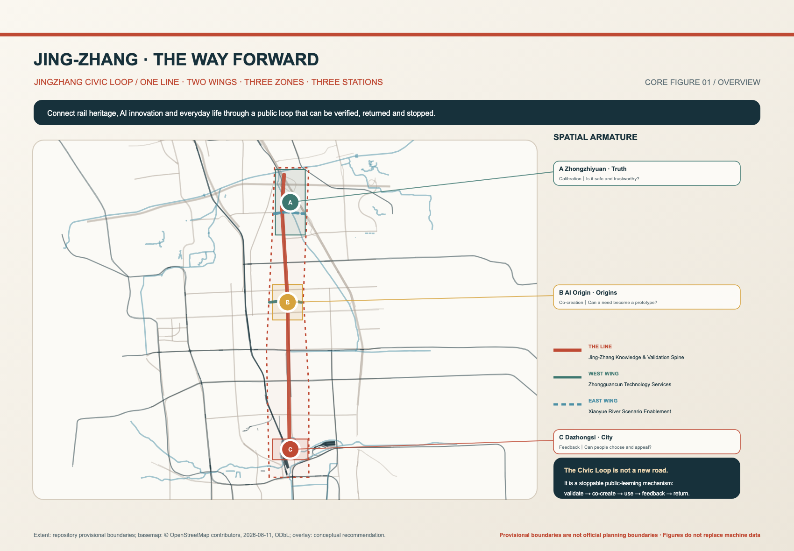
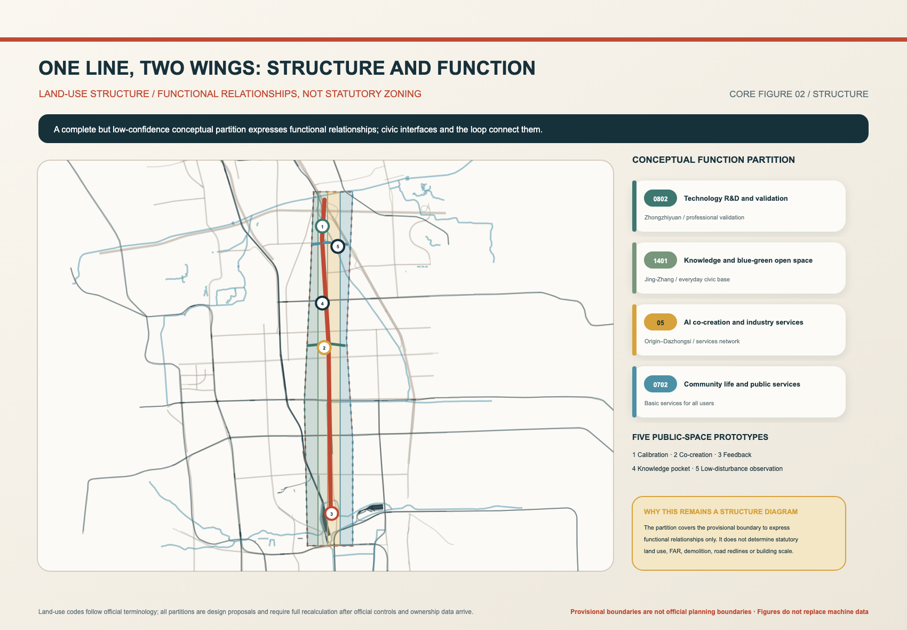
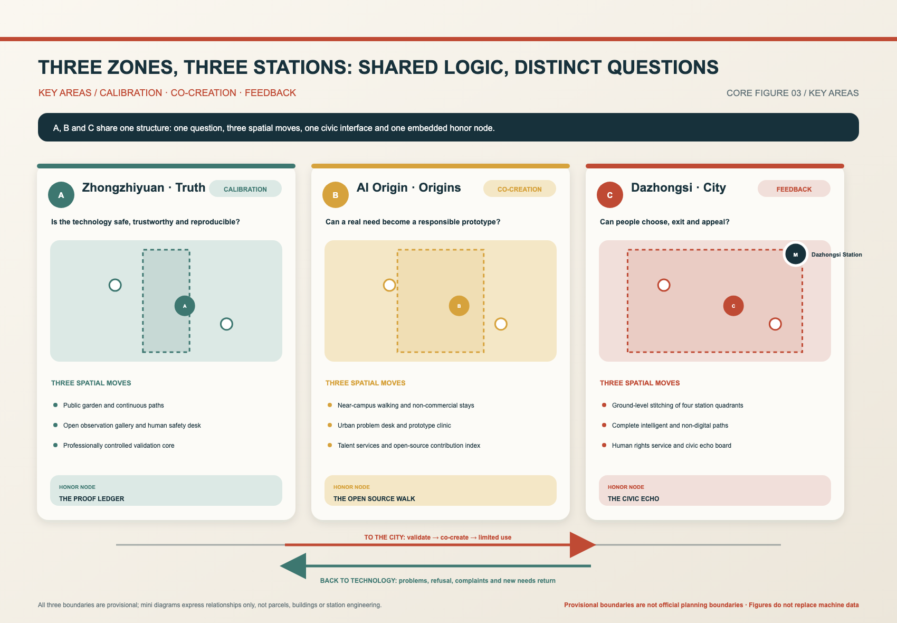
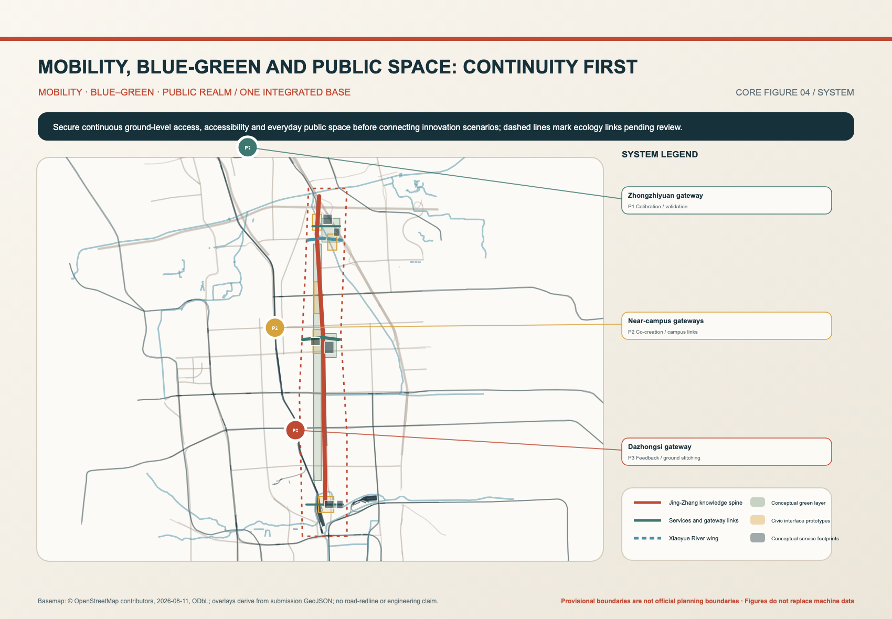
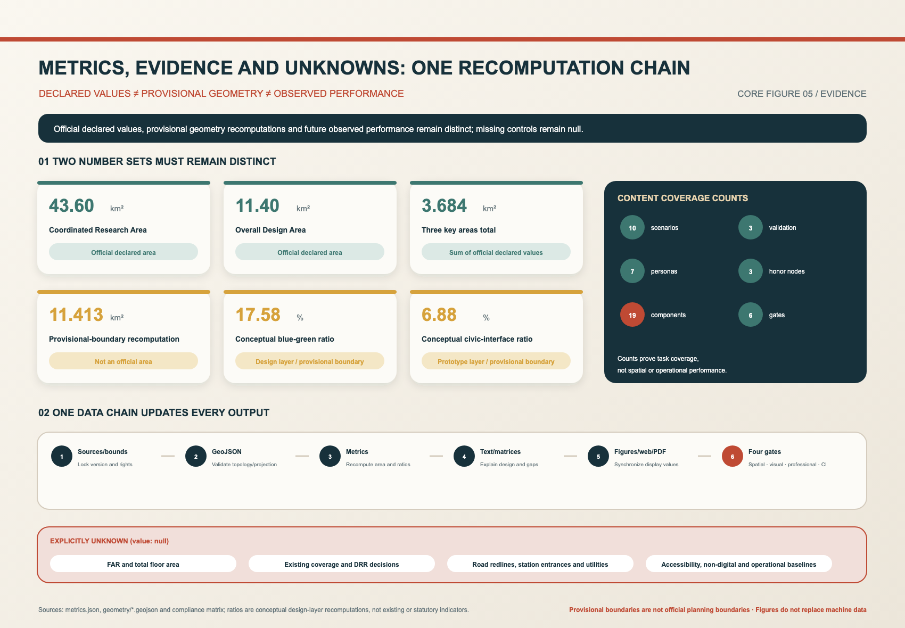

Calibration
Zhongzhiyuan · Ask the Truth
Open observation｜Staffed safety desk｜Proof Ledger
Centennial Jing-Zhang AI Innovation Belt · Urban Design Open Call
THE JINGZHANG CIVIC LOOP
A century-old railway did not end at arrival; a responsive intelligent city begins by answering back.
The historic railway becomes a public knowledge line. Zhongzhiyuan, AI Origin, and Dazhongsi become calibration, co-creation, and feedback stations where innovation can be tested, questioned, returned, and stopped.
01 / Overview · Three Scales
The 43.6 km² research area frames industry and the future city; the 11.4 km² overall area structures renewal and the public foundation; 368.4 ha of key areas test spatial and operating interfaces. Provisional boundaries are not official redlines.

02 / Land Use · Spatial Structure
The line is the Jingzhang public knowledge and validation spine. The two wings connect Zhongguancun services and Xiaoyue River scenarios. The three stations are civic interfaces embedded in the three districts—not a competing fourth hierarchy.

03 / Key Areas · AI Scenarios
Zhongzhiyuan asks whether technology is trustworthy; AI Origin asks where issues and prototypes come from; Dazhongsi asks whether actual users can respond, refuse, and complain. Long labels sit outside the map to preserve spatial evidence.

A civic interface turns access, exit, human help, responsibility, and complaint into visible urban facilities rather than abstract governance language.
Calibration
Open observation｜Staffed safety desk｜Proof Ledger
Co-creation
Civic issue desk｜Prototype clinic｜Open Source Walk
Feedback
Human rights desk｜Quiet interview｜Civic Echo
04 / Mobility · Blue-Green Public Realm
Solid lines are proposed continuous public links; dashed lines are conditional or pending verification. Blue-green ecology, walking, accessibility, and non-digital service form a civic foundation that AI cannot replace.

05 / Metrics · Sources and Assumptions
GeoJSON, metrics, and three matrices are machine-authoritative. Known values are recalculable. FAR, total floor area, road ratio, and operational performance remain unknown until official boundaries, controls, surveys, and utility data arrive.

06 / SYSTEM
Five packages from the public knowledge foundation to controlled validation and ecology.
Announcement clauses, agent tasks, six standards, and fifteen design-depth items are mapped.
Spatial topology passes; bilingual artifacts, PDFs, and hashes are checked at final assembly.
Official public records, taskbook, site package, standards snapshots, and a local OSM background.
Provisional boundaries cannot support approval or precise engineering claims; all figures will be recalculated.